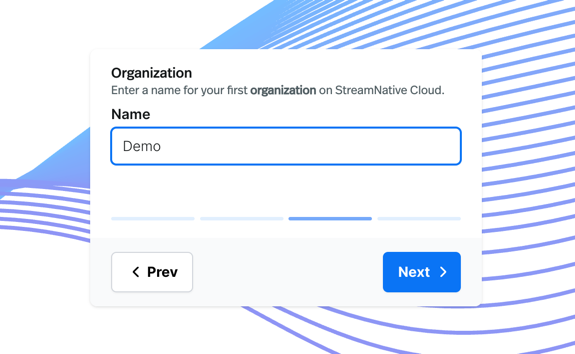
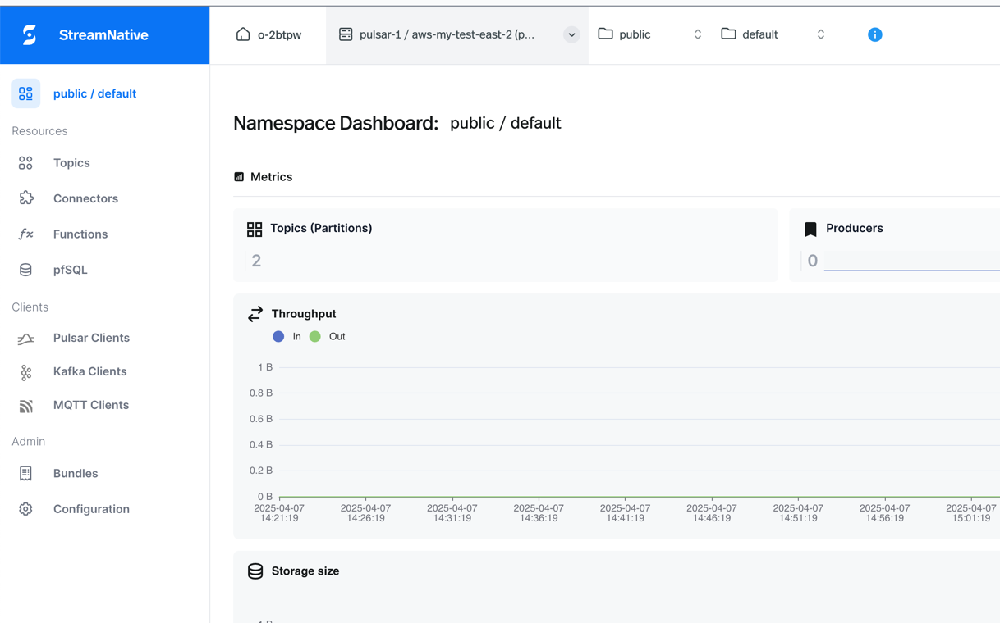
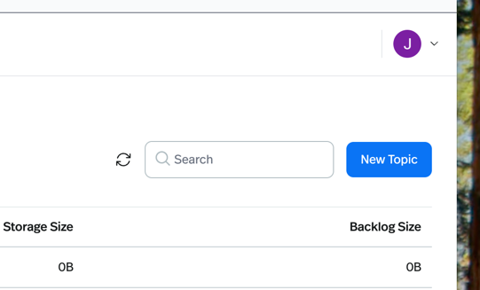
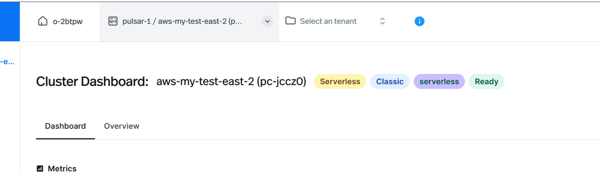
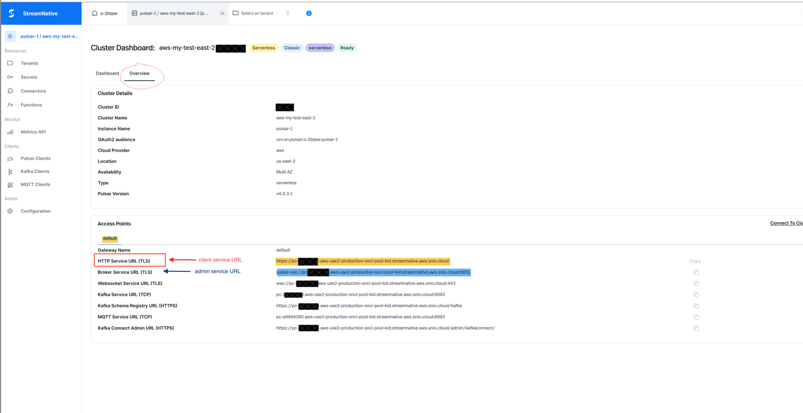

Deploying a Pulsar Cluster with StreamNative and Using Numaflow to Produce and Consume Messages¶
Introduction¶
This document demonstrates how to:
1. Deploy a Pulsar cluster using StreamNative
2. Connect the remote Pulsar cluster to a local Numaflow pipeline, and produce and consume messages
StreamNative¶
StreamNative Cloud is a data streaming service, delivered as a fully managed Pulsar and Kafka service. It removes the complexity of managing Pulsar and Kafka. StreamNative provides two options—StreamNative Hosted or BYOC Cloud—to run Pulsar or Kafka in the cloud in a simple, fast, reliable, and cost-effective way.
• Fully Hosted: StreamNative clusters hosted on StreamNative's public cloud account, available on AWS, GCP, and Azure. You can choose between Serverless and Dedicated clusters.
• Bring Your Own Cloud (BYOC): Host on your own public cloud account (AWS, GCP, or Azure), managed by StreamNative.
Prerequisite¶
Ensure you have Numaflow installed. If not, see the Quick Start guide.
Getting Started with StreamNative¶
This guide focuses on using the StreamNative Cloud Console for management and interactions.
- Go to streamnative.io
- Create an account at the StreamNative Console
- Follow the guided prompts to create an organization

- Follow steps 2–4 in this document: StreamNative Quickstart Console
In step 3, SAVE THE API KEY.
5. Select an instance, tenant, and namespace in the top-left bar. This will allow you to select "Topics" from the left side of the page:

6. To test producing messages, we will test the UDSink. Go to the Sink API Key manifests, copy these template yaml files, we will be providing the corresponding service URL and topic name.
7. Click "New Topic" and add a name and desired number of partitions. Remember your topic name - you'll need it for the producer ConfigMap's
topicName field. The format should be persistent://tenant/namespace/topic.
8. To get the service URL, select an instance, then click on the "Overview" tab. Copy the HTTP service URL (in red).


-
Update the ConfigMap with your service URL (from step 8) and topic name (from step 7):
Edit
docs/sink/byte-array/manifests/api-key/byte-arr-producer-config.yamland update theserviceUrlandtopicNamefields, then apply:kubectl apply -f docs/sink/byte-array/manifests/api-key/byte-arr-producer-config.yaml -
Create the Kubernetes Secret with your API key:
Edit
docs/sink/byte-array/manifests/api-key/byte-arr-producer-secret.yamland replaceYOUR-API-KEY-HEREwith your actual API key from step 3, then apply:kubectl apply -f docs/sink/byte-array/manifests/api-key/byte-arr-producer-secret.yamlUsing different authentication configurations: This implementation supports various authentication methods (API tokens, OAuth2, Basic Auth, etc.) via the Secret/ConfigMap pattern. Simply add your sensitive credentials to the Secret as environment variables, reference them in the ConfigMap using
${ENV_VAR_NAME}syntax, and apply both files. No Java code changes required!Note: For production environments, consider using cloud-native secret managers like AWS Secrets Manager, Google Secret Manager, Azure Key Vault, or HashiCorp Vault with the External Secrets Operator.
-
Deploy the producer pipeline (this generates one message every 10 seconds):
kubectl apply -f docs/sink/byte-array/manifests/api-key/byte-arr-producer-pipeline.yamlYou should see changes to throughput and storage size in the StreamNative cluster dashboard.
-
To see the messages produced, you can use the CLI or apply another pipeline for testing. Provide values for the required fields in the UDSource ConfigMap, which can be found at the Source API Key manifests.
Refer to step 8 to get the URL for the admin, the topic name, and the API key. Use the same topic name and API key. Apply the pipeline to consume messages from the specified topic and log them. On checking the pod logs, you should see the same messages generated by the first pipeline.
-
Avro schema validation (optional)
If you have an Avro schema registered on your topic, you can enable schema validation. See the Pulsar schema docs for more on schemas.Producer ConfigMap:
producer: enabled: true useAutoProduceSchema: true # validate payloads against the topic's schema dropInvalidMessages: false # true = silently drop invalid messages; false = fail and retry producerConfig: topicName: "persistent://public/default/test-topic"dropInvalidMessages: true— invalid messages are dropped, pipeline continuesdropInvalidMessages: false— invalid messages are reported as failures and may be retried
Consumer ConfigMap:
consumer: enabled: true useAutoConsumeSchema: true # deserialize using the topic's registered Avro schema consumerConfig: topicNames: "persistent://public/default/test-topic"If a message is invalid (schema mismatch or corrupt payload), the consumer throws a
RuntimeExceptionand the message is not acknowledged, so it may be redelivered.